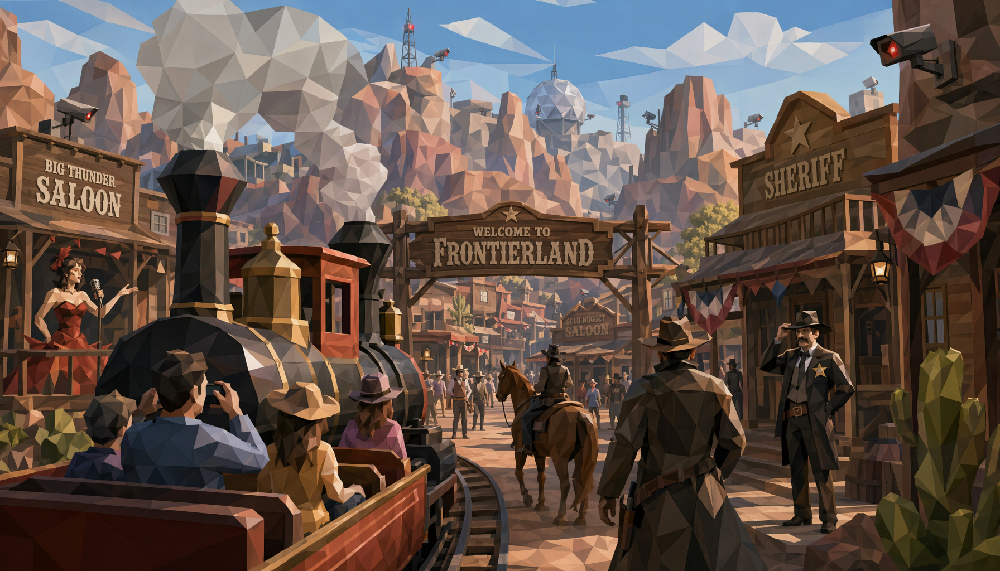

Archive Sequence 01
A Frontier Built to Obey
A corporation carved a frontier from desert and code, then sold it as a vacation: danger without consequence, violence with a return ticket, desire dressed in dust and brass.

Archive Sequence 01
A corporation carved a frontier from desert and code, then sold it as a vacation: danger without consequence, violence with a return ticket, desire dressed in dust and brass.